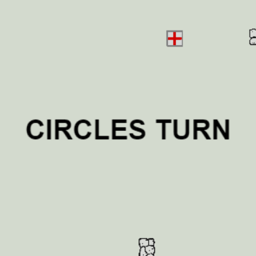
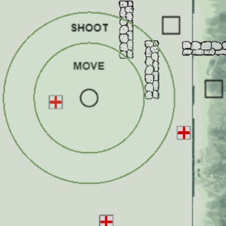
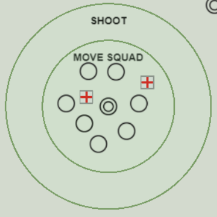
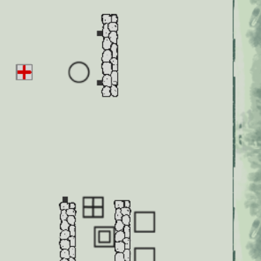
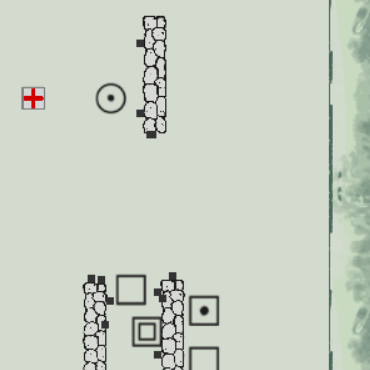
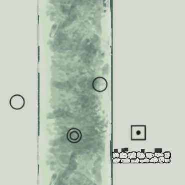
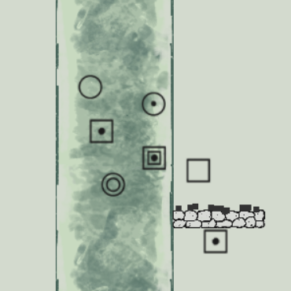

How to play TRENCH GAME

- Turns are decided at random! You'll see whose move it is at the beginning of each turn. Click a shape to select them.

- Here's a standard TRENCH GAME scene. You can do three things with your turn. This circle could:
- pick up the health kit on its left.
- move to the position of your mouse, when you click anywhere within the circle labeled 'MOVE'
- shoot a bullet towards the position of your mouse, when you click inside the circle labeled 'SHOOT'

- Note! Generals (the shapes with smaller shapes inside them) tell the shapes around them where to go. All the circles around this circle general would move along with it.

- The square with the plus sign on it is a regular square that has picked up a health kit. It is a "strong" square. Circles can also be "strong" if they pick up a health kit.

- After a fight, you'll probably find some injured soldiers. You can tell they're injured because of the dots on them. The circle can heal back to regular health by picking up the health kit.

- The last big thing to learn about is walls and trenches. The circles in the trench on the left can't shoot the square in the center because they're in a trench, but the circle on the far left can. On the other hand, the square can't shoot down into the trench. It can only shoot at things above ground.

- Trenches aren't absolute security, though. The squares from the right trench in the last picture have jumped into the circles' trench, and they can now fight each other. Walls provide cover inside trenches, too.
I hope you enjoy TRENCH GAME a lot. Please teach your friends to play and stay safe!
Go Home
Play Now